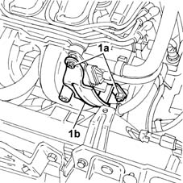
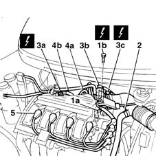
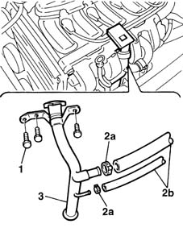
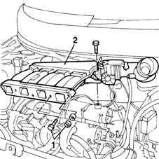

1072B50 sleeves connecting air capacity box to inlet manifold is - r+r
- Path
- Procedures > 10 ENGINE UNIT > 1072 INLET AND EXHAUST MANIFOLDS > 1072B inlet manifolds > 1072B50 sleeves connecting air capacity box to inlet manifold is - r+r
- Kind
- repair procedure (removal / refitting; the operation number is the code)
- Applies to
- engines: 1.6 16v; all production periods
- Interactive page
- https://sloeber94.github.io/elrnDB-fMltpl/en/#/2891282
Applies to: engines: 1.6 16v; all production periods
 Removing
Removing
 Refitting
RefittingWith the ignition key in the OFF position, disconnect the battery negative terminal.
1048A10 AIR CLEANER FILTERING ELEMENT - REPLACE
1084A16 oil dip stick pipe - r r
1. Undo the nuts (1a) fixing the bracket (1b) and remove it.

Applies to: engines: 1.6 16v; all production periods
1. Take the accelerator cable out of connection (1a) on the throttle body, unscrew bracket retaining bolts (1b) and move the accelerator cable out of the working area.
2. Disconnect the pipe leading to the filler fitting from the air intake line.
3. Disconnect electrical connections (3a), (3b) and (3c).
 | Name | Connector |
|---|---|---|
3a | Integrated air temperature sensor |
| Name | Connector |
|---|---|---|
3b | Idle actuator |
| Name | Connector |
|---|---|---|
3a | Throttle position sensor |
4. Disconnect brake servo vacuum pump lines (4a), evaporation control system line (4b) and blow-by line (4c) from the casing.

Applies to: engines: 1.6 16v; all production periods
1. Undo the filler fitting retaining bolts.
2. Open the clips (1a) and disconnect the pipe (1b).
3. Remove the filler fitting and recover the lower seal.

Applies to: engines: 1.6 16v; all production periods
1. Undo the bolts and nuts securing the casing to the intake manifold and both bolts securing the casing to the right cylinder head extension.
3. Remove the intake casing.

Applies to: engines: 1.6 16v; all production periods
Refitting
RemovingFit the air intake casing.
Tighten the bolts and nuts securing the casing to the cylinder head extension.
 | Fastening | Component | Ø | Value (daNm) |
|---|---|---|---|---|
- | Bolt | INLET AIR DUCT | M7 | 1.5 |
Tighten the bolts and nuts to the intake manifold.
Connect the electrical connection.
| Name | Connector |
|---|---|---|
- | Integrated air temperature sensor |
| Name | Connector |
|---|---|---|
- | Idle actuator |
| Name | Connector |
|---|---|---|
- | Throttle position sensor |
Connect the pipes disconnected previously to the air intake casing.
Connect the accelerator cable to the throttle body and mount and then adjust.
1068A10 accelerator pedal control - check, adjust if necessary and lubricate
1084A16 oil dip stick pipe - r r
1048A10 AIR CLEANER FILTERING ELEMENT - REPLACE
Connect the battery negative terminal.
Topics linked from this page (6)
- 1048A10 AIR CLEANER FILTERING ELEMENT - REPLACE
- 1068A10 accelerator pedal control - check, adjust if necessary and lubricate
- 1084A16 oil dip stick pipe - r r
- K43 Integrated air temperature sensor
- K56 Throttle position sensor
- N74 Idle actuator
Topics that link to this page (11)
- 1016B20 lh cylinder head extension - replace gasket
- 1016B22 lh cylinder head extension - r r with timing belt removed - replace gasket
- 1016B26 rh cylinder head extension -r r with timing belt removed -replace gasket
- 1016C10 cylinder head - r + r and replace gasket
- 1028H10 connecting rod and piston set - r r
- 1028H20 piston with connecting rod - r r
- 1036G10 camshaft controlling exhaust valves in top head - r + r with top head removed - includes replacement of top head
- 1036G20 camshaft controlling intake valves in top head - r + r with top head removed - includes replacement of top head if necessary
- 1056B60 single fuel manifold pipe, with injectors - r + r
- 1072B10 inlet manifold - r + r and replace seal
- 1072C44 exhaust manifold heat shield on bulkhead - r+r